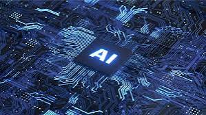
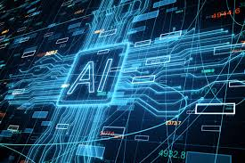

產業簡介
AI晶片是專為執行人工智慧運算設計的特殊硬體，包含GPU（圖形處理器）、ASIC（應用專用集成電路）、FPGA（現場可編程門陣列）等。這些晶片針對AI應用的需求進行了優化，如支持平行計算、加速記憶體存取、降低計算精度等，從而提供更高效的運算能力和能源效率 。
為何選擇這個產業？
AI 晶片產業結合了創新與技術，是未來智能化應用的關鍵推手。從雲端運算到邊緣設備，它讓科技突破了傳統限制，帶來更多可能性。隨著AI技術的蓬勃發展，市場對於高性能、低功耗的晶片需求勢必會增加。因此，這會是個充滿競爭，但同時也充滿機會的產業。晶片的設計與製造可說是電機工程學系的專業之一，雖然我是行政系的學生，但目前也開始雙主修，希望未來能有機會朝這個行業發展。
AI 在這個產業的貢獻
1、加速設計與驗證：AI技術整合於電子設計自動化（EDA）工具中，能提升設計效率、縮短開發時間，並改善晶片的功率、效能和面積（PPA）
。
2、優化晶片性能：生成式AI和強化學習技術可快速識別並優化設計參數，從而實現更高效的晶片架構設計
。
3、支持量產與客製化：AI輔助晶片設計使得製造商能以更低成本快速適應市場需求，為不同行業提供專屬的AI硬體解決方案
。
4、推動創新應用：AI晶片的高效能使其適用於影像處理、智慧家庭、醫療分析等多種領域，甚至催生新興應用，如自動駕駛和工業自動化
。
總之，AI科技在設計、製造和應用層面為AI晶片產業提供了強大的支持，加速了產業的技術迭代和市場拓展。